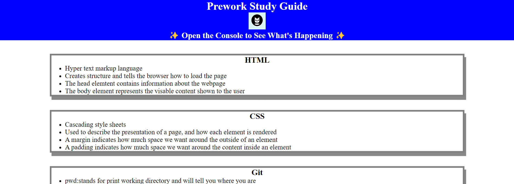
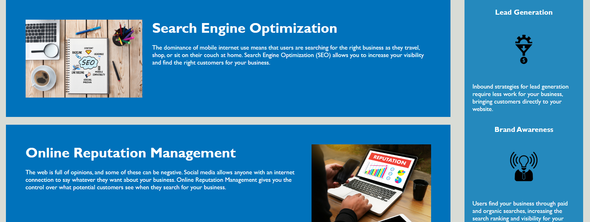

About Me
My name is Caybree but I go by Cat. My parents started calling me Cat when I was young, probably because I am such a cat person. All growing up I new that I was interested in the tech industry but didn't know quite which area to persue. After speaking with a friend who had gotten into software engineering, I became very interested in that expertise because of all of the different but very cool things you can do with it. I am currently a student at the University of Utah and am knee deep in a coding bootcamp to further my skills. Keep coming back to this portfolio to see all the neat pages I make in the future!

Study Guide
When I had little to no prior experience with coding, I created a study guide to coding as a prework project before starting my coding bootcamp. This webpage included HTML, CSS, and JavaScript and was deployed to the web. Click on the image below to see the live site! 
Client Site
Still being very new to web developement, I was given a starter code and created a website for a client using HTML and CSS only. This website includes a working navigation tab that when clicked will take the user to a specifc area of the page, pictures, and links. Click on the image below to see the live site! 